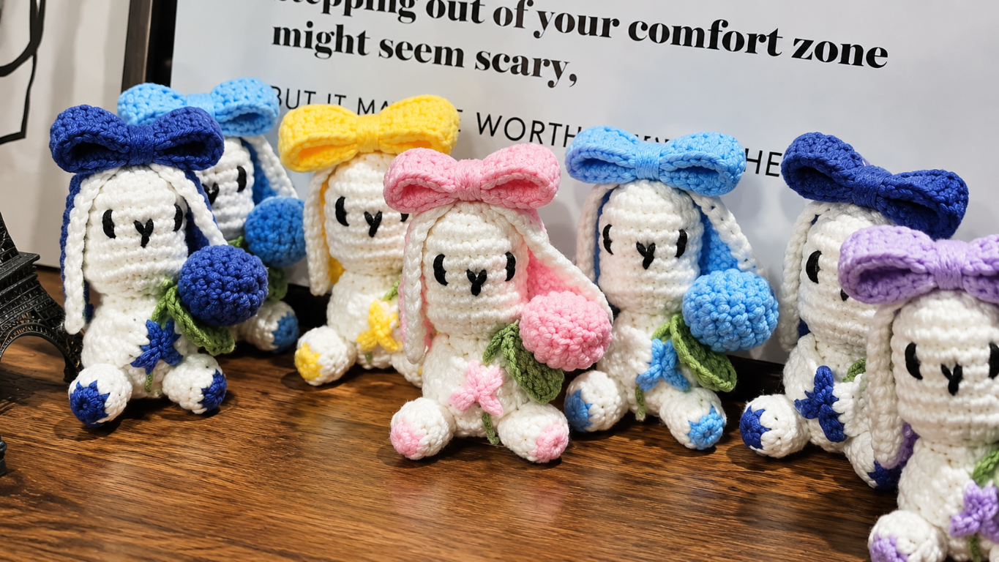
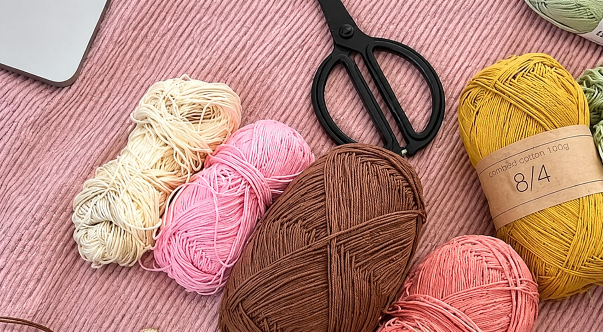
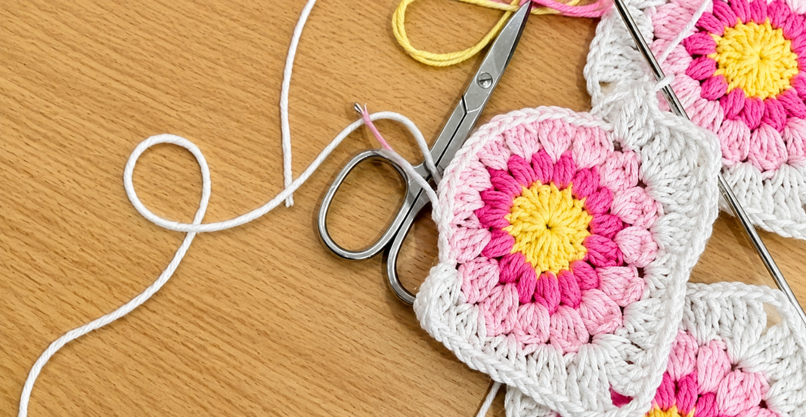

 Tricia Anne Borres Mar 23, 2025·1 min read Bunny Keychain Pattern 25 views · 0 comments ♡
 Tricia Anne Borres Mar 23, 2025·2 min read 10 Must-Have Crochet Tools for Every Enthusiast 7 views · 0 comments ♡
 Tricia Anne Borres Mar 23, 2025·2 min read How to Master the Granny Square Stitch 5 views · 0 comments ♡